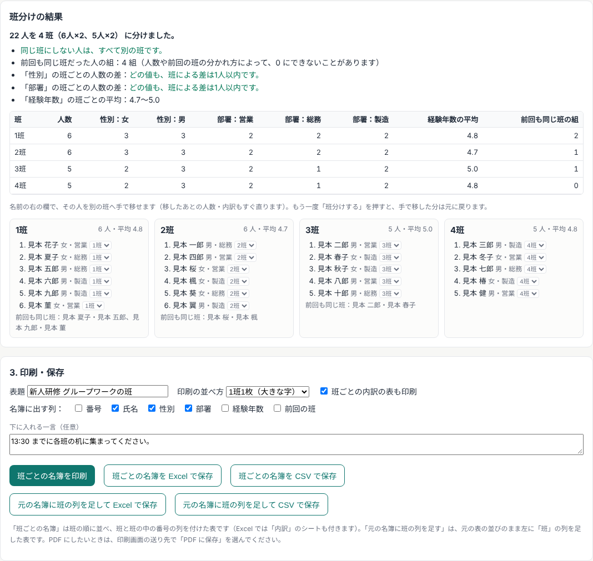

班分け・グループ分け
研修のグループワーク、子ども会・地域の行事、社内イベントなどの名簿から、人数がそろい、性別・学年・部署などが偏らない班を作ります。「この2人は同じ班にしない」「この人たちは同じ班にする」、前回と同じ顔ぶれを減らす、点数や経験年数の平均をそろえるといった条件も入れられます。できた班は、班ごとの名簿として A4 で印刷したり、Excel・CSV で保存したりできます。ソフトのインストールは不要で、いつものブラウザで動きます。
500円（税込・買い切り）
お試し版はすべての機能を使えて、班分け・印刷・保存は名簿の先頭20人までです。決済が終わると、そのまま製品版の画面に移動します。ブックマークしておけば何度でも使えます。

見本のデータ（架空の研修の参加者22人）を4班に分けた例。氏名は説明用のもので、実在の人とは関係ありません。
こんなときに
- 研修のグループワークの班を、部署や男女が偏らないよう、名簿を見ながら手で調整している
- くじ引きやランダムで分けたら、ある班だけ同じ部署・同じ学年ばかりになってしまった
- 「この2人は別の班に」「兄弟は同じ班に」といった頼まれごとを守りながら分けたい
- 毎回の研修・ゼミで、前回と同じ顔ぶれにならないようにしたい
- 班ごとの名簿を印刷して配りたい、元の名簿に班の列を足しておきたい
できること
- 班の数か、1班の人数の目安を決めて分ける：「4班に」「1班5人くらいで」のどちらでも。班の人数の差は1人以内になります（22人を4班なら6人・6人・5人・5人）
- 偏らないようにする列：性別・学年・部署・地区などの列を選ぶと、その値ごとの人数が、どの班にも同じくらいずつ入るようにします。いくつかの列を同時に選べます
- 同じ班にしない人・同じ班にする人：名前を「、」で区切って1行に1組。2人でも3人以上でも書けます
- 前回と同じ顔ぶれを減らす：「前回の班」の列があれば、前回同じ班だった人どうしをなるべく別の班にし、残った組の数を表示します
- 平均をそろえる：テストの点数・経験年数・年齢などの数の列を選ぶと、班ごとの平均が近くなるようにします
- 班を決めてある人：リーダー役など、班が決まっている人はその班に入れ、残りの人だけで分けます
- 結果の点検：条件を守れたか、守れなかった組はどれか、列の値ごとの班による人数の差を表示します。班ごとの内訳の表（人数・男女の数・部署ごとの数・平均など）も出します
- 手で直せる：結果を見て、名前の横の欄から1人ずつ別の班へ移せます。「別の分け方を作る」で何通りでも作り直せます。同じ名簿・条件・番号なら同じ班分けになるので、あとから同じ結果を出し直せます
- 印刷と保存：班ごとの名簿（班を続けて並べる／1班1枚の大きな字、内訳の表つき、出す列を選べる）を A4 縦で印刷。班ごとの名簿と、元の名簿の並びのまま「班」の列を足した表を、Excel ファイル・CSV で保存
- CSV（UTF-8・Shift_JIS）と Excel ファイル（.xlsx）を読めます。Excel の表をコピーして貼り付けても使えます
できないこと（購入前にご確認ください）
- すべての条件を必ず満たせるとは限りません。たとえば「同じ班にする」3人が全員同じ部署なら、その部署の人数は班によって差が出ます。守れなかった条件は画面に表示します
- 「いちばん良い分け方」であることは保証しません。条件を満たしやすい分け方を、入れ替えをくり返して探す方法です
- 人の相性・能力の判断はしません。名簿にある列の値だけを使います
- 座席表・席次表（机の並びに名前を入れた図）は作りません（座席表の作成 をお使いください）
- 毎週・毎日の当番のように、くり返し回す割り当ては 当番表の自動作成 をお使いください
- スマートフォンでは操作しにくいため、パソコンでお使いください
Excel だけで分けるなら
偏らないようにしたい列が1つ（たとえば性別）なら、Excel だけでも次の手順で分けられます。
- 名簿の右の空いた列（例：E 列）の見出しを「乱数」にして、E2 に
=RAND()と入れ、下までコピーします - 表全体を選び、「データ」→「並べ替え」で、最優先されるキーを「性別」、次に優先されるキーを「乱数」にして並べ替えます
- その右の列（F 列）の見出しを「班」にして、F2 に
=MOD(ROW()-2,4)+1と入れ、下までコピーします（4 は班の数）。上から 1・2・3・4・1・2… と配られるので、男女それぞれの人数が班ごとに1人以内の差になります - F 列をコピーして「値の貼り付け」をしておくと、あとで並べ替えても班が変わりません
このツールが向いているのは、性別と部署のように偏らせたくない列が2つ以上ある、同じ班にしない・する人の頼まれごとがある、前回と同じ顔ぶれを避けたい、点数の平均もそろえたい、班ごとの名簿をすぐ印刷したい、といった手順だけでは調整しきれないときです。
よくある質問
| データはどこかに送られますか？ | 送られません。読み込み・班分け・印刷・保存はすべてお使いのブラウザの中で行います。表題・班の名前・印刷の並べ方の設定だけをブラウザに保存し、名簿の中身は保存しません。 |
|---|---|
| 名前の書き方が名簿と少し違っても大丈夫？ | 「同じ班にしない人」などの名前は、空白の有無と全角・半角の違いを無視して名簿と照らし合わせます。見つからない名前や、名簿に同じ名前が2人以上いるときは、何行目の名前かを表示します。 |
| 毎回ちがう班分けになりますか？ | 「別の分け方を作る」を押すたびに、ちがう班分けを作ります。分け方の番号が同じなら同じ結果になるので、気に入った分け方は番号を控えておけば作り直せます。 |
| 班の名前は変えられますか？ | 「1班・2班」「A班・B班」「グループ1」「チーム1」から選べます。 |
| 何人まで使えますか？ | 製品版は人数の制限はありません。600人・1班6人（100班）で、学年と性別の偏りをそろえ、前回の班も避ける条件のとき、ボタンを押してから結果が出るまで2秒ほどでした（パソコンの性能によります）。 |
安心してお使いいただくために
- 名簿はお使いのブラウザの中だけで処理し、サーバーには送信しません
- 動作環境：最新版の Chrome・Safari・Edge・Firefox（パソコン）
- 説明どおりに動かない場合は、ご購入から7日以内にご連絡いただければ返金します
名簿の名札は 名札・席札の一括印刷、くり返しの当番は 当番表の自動作成、名簿の重なりの点検は 名簿の重複チェック もあります。